Your bathroom doesn't have to stay purely functional and a little boring.
It can be your personal spa, your design playground, or just a quiet retreat from everything else happening in the house — and the fastest way there is one genuinely good accent wall.
A single wall, done right, can change the mood of the entire room.
These twelve ideas range from a weekend paint refresh all the way to a full stone or mosaic statement, so there's an entry point here no matter your budget or how adventurous you're feeling.
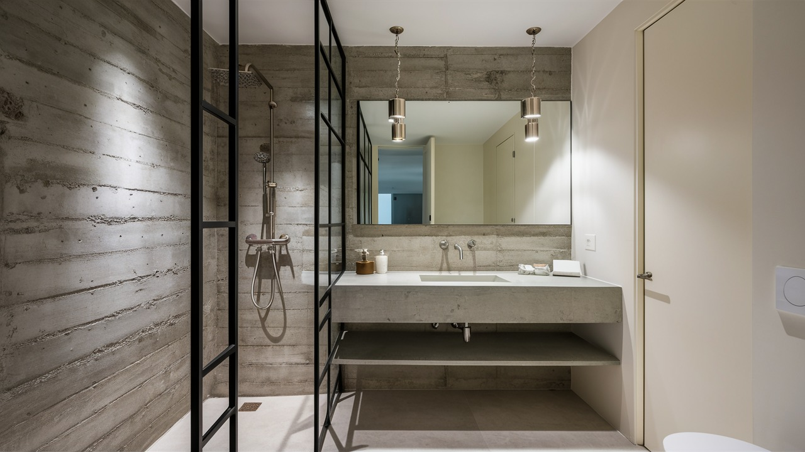
1. Start With a Gallery Wall
Gallery walls aren't just for the living room. Your bathroom deserves some personality too, and a mix of frames and artwork is one of the easiest ways to give it some.
The trick is embracing a little variety instead of forcing everything into a uniform grid. Mix frame sizes, mix finishes, toss in a couple of small mirrors.
It should feel collected over time, not ordered all at once from the same store.
Black and gold frames against a neutral brick wall, with a few decorative mirrors layered in, look genuinely chic without a single matching piece in the bunch.
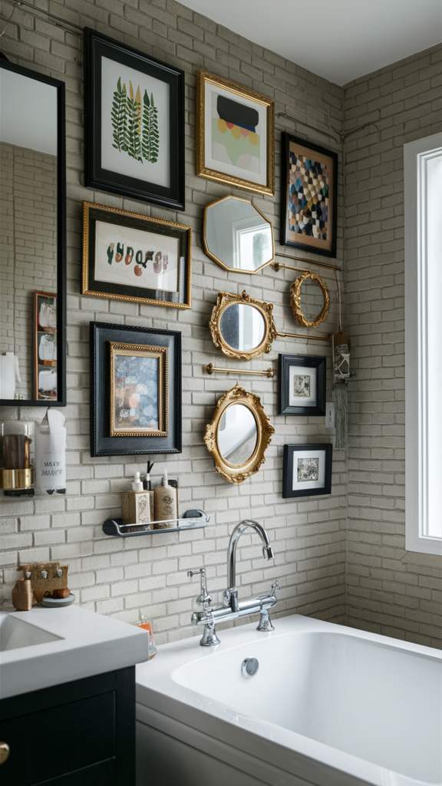
2. Try Wallpaper, Even Here
Wallpaper in a bathroom sounds risky until you realize the modern, moisture-resistant versions are actually built for humidity now.
It's a fast way to add real depth and character without losing an inch of floor space.
Metallics, florals, faux brick — the options go way beyond what paint or tile can offer, and a patterned wallpaper wall reads as far more custom than it actually costs to install.
A dark botanical print, glowing under a backlit mirror in a walk-in shower, proves wallpaper can hold up beautifully even somewhere this wet.
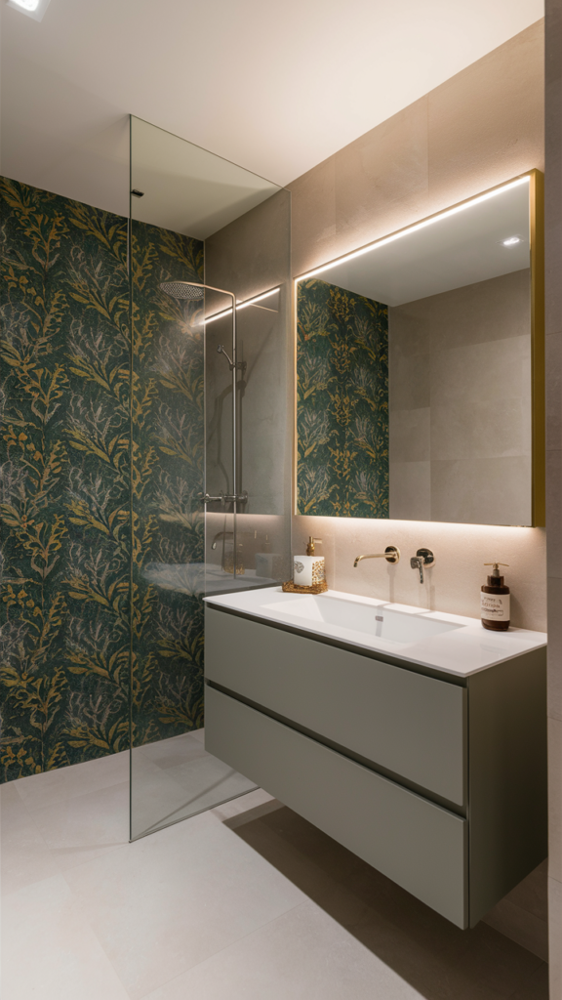
3. Go Industrial With Concrete
If a modern, industrial look is what you're after, concrete is about as confident as a bathroom wall gets.
It's raw, it's a little edgy, and it doesn't try particularly hard to be anything else.
The texture pairs beautifully with matte black or brushed metal fixtures, and genuinely minimalist decor. Concrete does its best work when the rest of the room stays quiet around it.
A full concrete treatment from floor to wall, framing an open glass shower, can make even a small bathroom feel like an actual design statement instead of an afterthought.
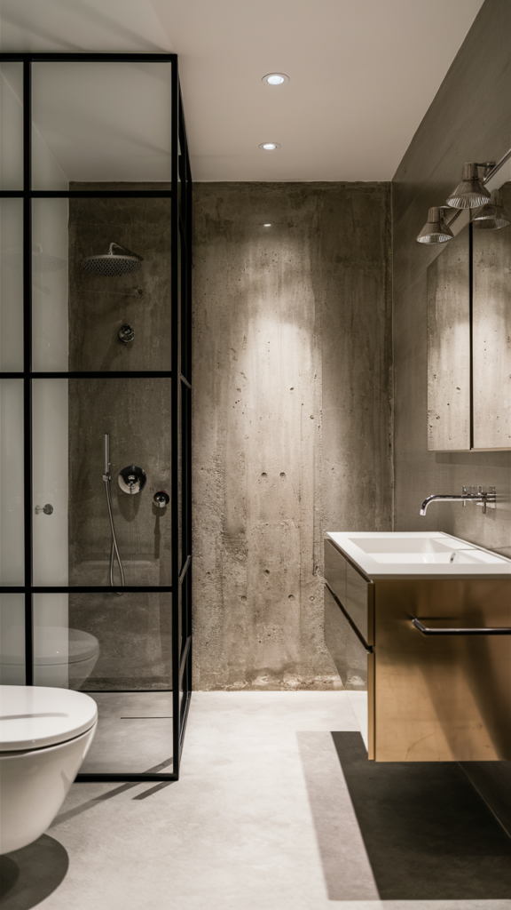
4. Soften Things With Shiplap
Shiplap isn't just for farmhouse kitchens anymore. It works just as well in a bathroom, and it genuinely softens a room that can otherwise feel cold and hard-surfaced.
Soft colors do most of the work here — white, gray, or a muted pastel blue on shiplap planks creates a warm, welcoming feel that tile alone rarely manages.
Paired with a round antique mirror and a few plants, the effect is cozy enough that you'll forget you're standing in a bathroom at all.
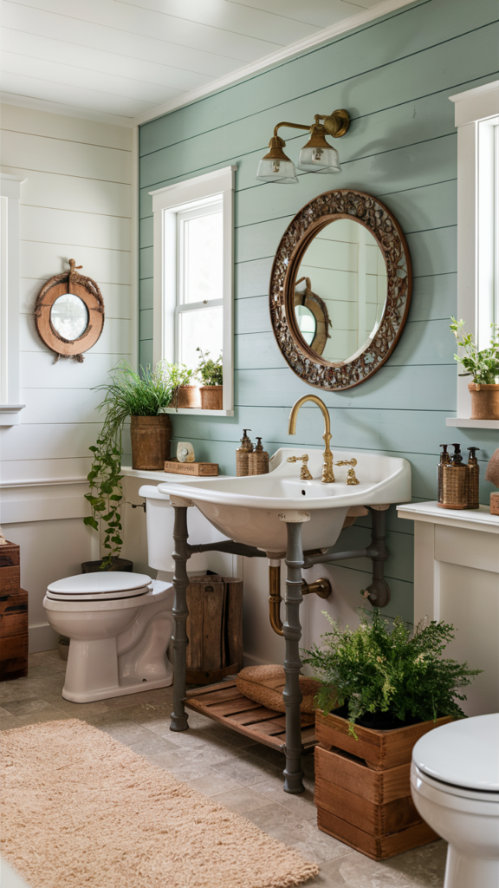
5. Make a Statement With Mosaic
If you want your bathroom to feel genuinely artistic, a mosaic wall is the move. It's fully customizable — florals, abstracts, landscapes, whatever you're drawn to.
Scale is what makes this work. A mosaic covering a full wall reads as a real art installation rather than a decorative accent, and it holds up beautifully in a wet, reflective space.
An intricate blue-and-gold mosaic, caught in the mirror behind the sink, can turn a simple vanity wall into the most striking thing in the whole house.
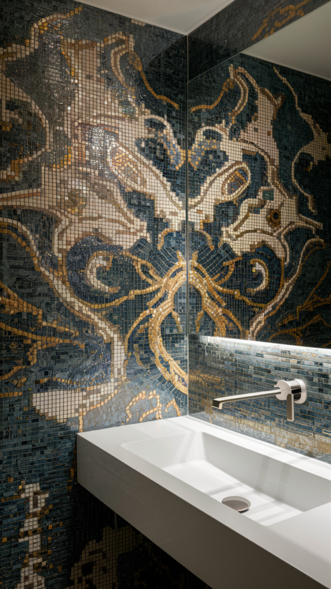
6. Double Your Space With Mirror
A mirrored wall does double duty. It's genuinely practical for getting ready, and it makes a bathroom look considerably larger than it actually is, just by bouncing light around the room.
This is one of the best tricks out there for a small bathroom specifically. A full mirrored panel wall visually doubles the space without a single inch of real renovation.
A floor-to-ceiling mirror behind a floating vanity, reflecting the whole room back at itself, proves this trick looks as polished as it is useful.
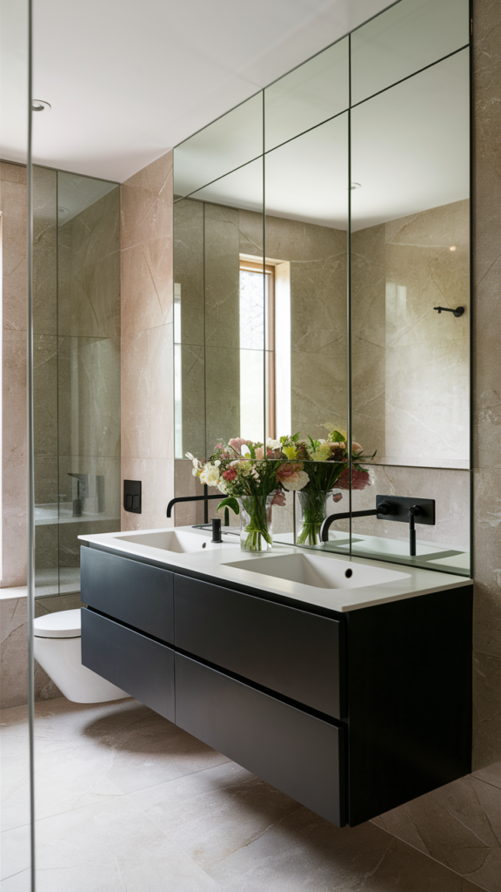
7. Add Warmth With Wood
Wood brings a natural, homey warmth that tile and paint simply can't replicate.
Moisture-resistant planks or panels make it a genuinely practical choice for a bathroom, not just a good-looking one. The texture and grain do a lot of the visual work on their own, so you don't need much else happening in the room once a wood wall becomes the focal point.
Backlit wood paneling behind a tub, glowing from hidden under-shelf lighting, turns a simple material into something genuinely elevated.
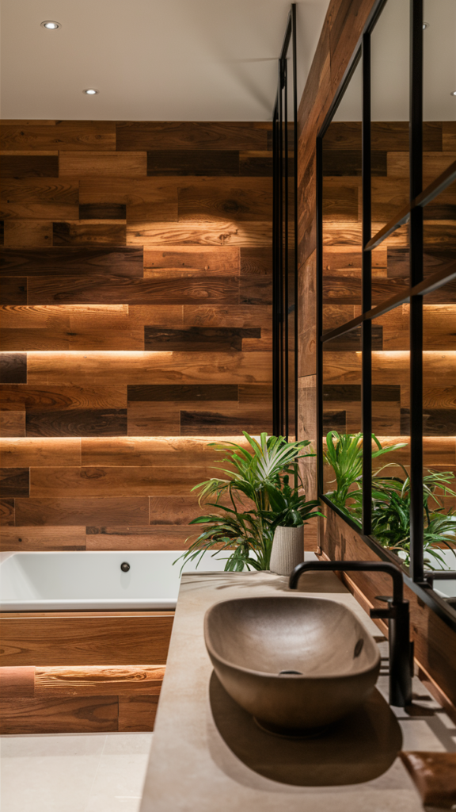
8. Go Bold With Pattern
For instant drama, nothing beats a bold, patterned tile. Geometric prints, Moroccan-inspired motifs, loud color combinations — this is where a bathroom actually gets to be fun.
The impact comes from contrast. A busy, graphic tile wall paired with simple white fixtures and neutral accessories lets the pattern do all the talking, instead of competing with it.
A navy-and-white zigzag running floor to ceiling is the kind of detail that makes a bathroom feel expensive the second you walk in.
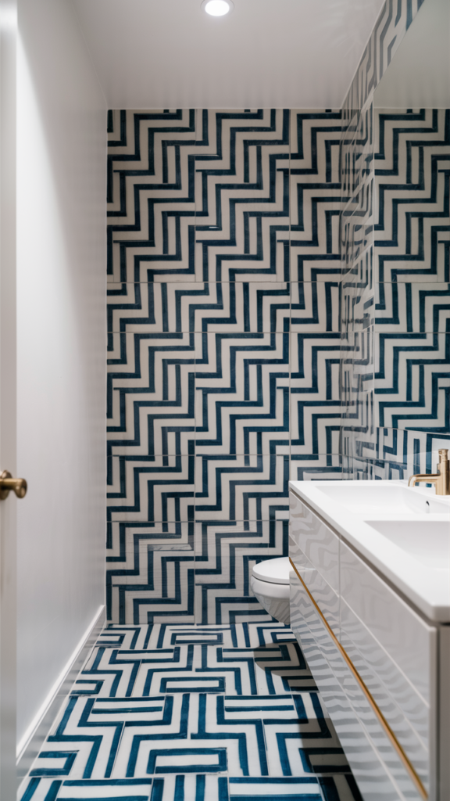
9. Bring in a Living Wall
Plants genuinely belong in a bathroom, and going vertical is how you fit them in without losing any floor space. Humidity-loving varieties like ferns and pothos practically thrive in there.
A living wall does more than add color. It brings the whole room to life in a way tile or paint never quite manages, turning an ordinary bath into something closer to a private jungle.
Framed in rustic stone behind a wood-clad tub, a vertical garden wall becomes the single most memorable thing in the room.
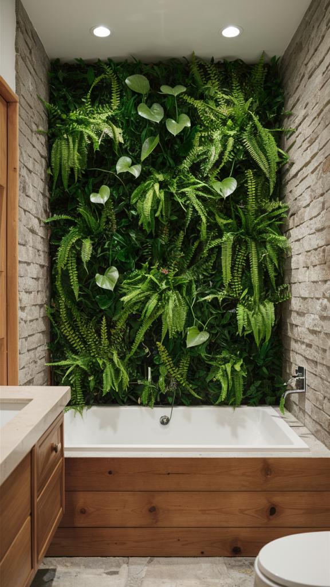
10. Just Paint It
Sometimes the right move is simply picking up a paintbrush.
A deep, saturated color — navy, emerald, even a bold yellow — can carry an entire bathroom on its own.
It's genuinely one of the easiest DIY upgrades here. A weekend, a roller, and one bold can of paint is all it takes to completely change how the room feels.
A textured, almost hand-brushed emerald finish against brass fixtures proves that paint alone, applied with a little intention, can look every bit as rich as a more expensive material.
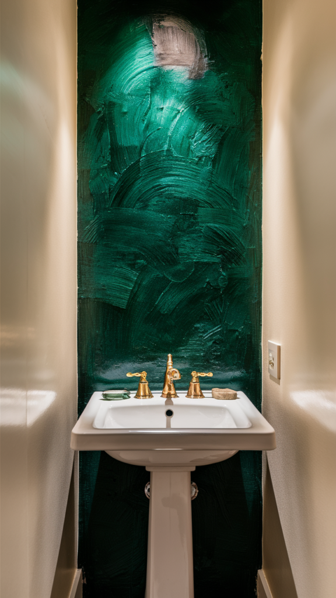
11. Lay Tile in Herringbone
Herringbone is one of those patterns that manages to look both timeless and current, no matter how long it's been trending.
It takes a basic tile and gives it real presence, just through the way it's laid.
The classic version uses white subway tile set at the herringbone angle, with a contrasting grout line that makes the zigzag pop instead of blending in.
Carried from the wall onto the floor, the whole room starts to feel intentionally designed rather than just tiled.
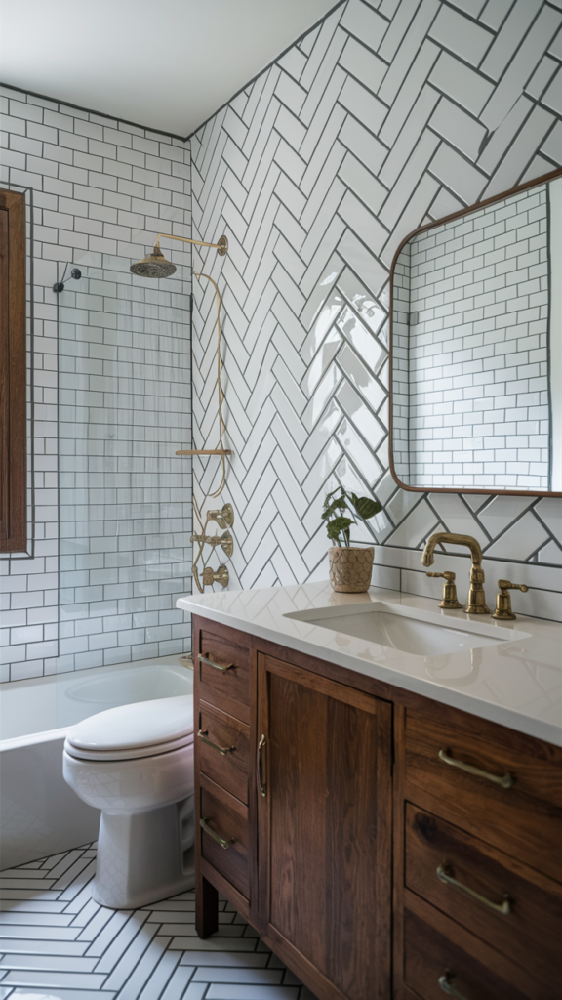
12. Finish With Natural Stone
If you want your bathroom to feel like a genuine spa, natural stone is the fastest way there.
Slate, marble, and travertine all bring a level of texture and elegance that's hard to fake with anything else.
A single stone feature wall does more visual work than an entire room full of smaller finishing touches. It reads as deliberate, expensive, and calm, all at once.
Behind a freestanding tub, dramatic veined marble turns an ordinary bath into the kind of moment you'd expect from a boutique hotel, not a regular bathroom.
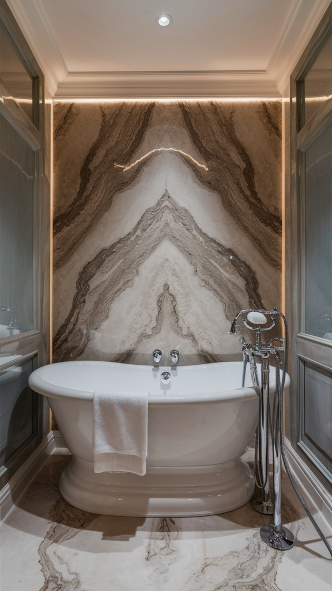
One Wall Is Usually Enough
Your bathroom doesn't have to stay basic.
Whether you're drawn to bold color, natural texture, or a wall full of real greenery, an accent wall is the single highest-impact upgrade on this whole list.
Pick the version that actually matches how you want the room to feel, start with one wall, and let the rest of the bathroom stay simple around it.
A good accent wall doesn't need backup. It just needs room to be the star.
Give it that room, and the rest of the bathroom will follow its lead without you having to plan another single thing.